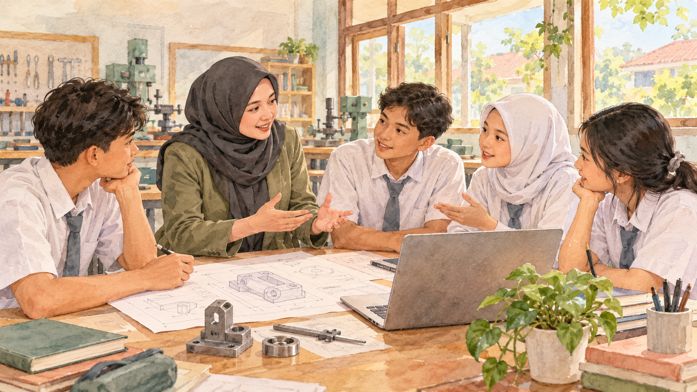

Dari Harapan Orang Tua,
Menjadi Panggilan Hati
Mengenali visi pribadi, memaknai pilihan menjadi guru, dan merawat langkah untuk berbakti melalui pendidikan.
Perjalanan saya menuju dunia pendidikan berawal dari nilai yang ditanamkan orang tua: ilmu adalah bekal berharga bagi kehidupan. Seiring waktu, dorongan itu tumbuh menjadi keinginan saya sendiri untuk mengabdi. Mengenali diri sebagai calon guru berarti memahami alasan saya memilih jalan ini, pendidikan seperti apa yang saya impikan, dan bagaimana saya akan mewujudkannya.

Dalam cerita ini
Keinginan yang berawal dari rumah
Sejak kecil, orang tua saya menanamkan keyakinan bahwa ilmu adalah bekal terbaik yang dapat diberikan kepada anak. Mereka juga mengenalkan saya pada kemuliaan profesi guru, seseorang yang dapat membuka jalan kebaikan bagi banyak orang. Nilai itu menjadi titik awal saya memandang pendidikan sebagai bagian penting dari kehidupan.
Dalam perjalanan saya, harapan orang tua tersebut perlahan menjadi keyakinan pribadi. Saya ingin ikut berbakti kepada negeri melalui pendidikan, karena kualitas generasi muda turut menentukan kemajuan bangsa. Pilihan menjadi guru pun saya maknai sebagai kesempatan untuk mengambil bagian dalam pertumbuhan mereka.
Mengingat alasan ini membantu saya menjaga arah. Ketika saya belajar merancang pembelajaran, memahami peserta didik, atau memperbaiki cara mengajar, ada niat yang terus saya rawat: semoga ilmu yang saya pelajari dapat menjadi sesuatu yang berguna bagi orang lain.
“Pendidikan yang merata, bermutu, dan berpihak pada seluruh anak bangsa.”
Visi pribadi untuk pendidikan Indonesia
Setiap anak berhak mendapat kesempatan untuk tumbuh
Saya membayangkan pendidikan Indonesia yang memberi ruang bagi setiap anak untuk berkembang. Anak yang belajar di kota besar maupun di daerah terpencil sama-sama berhak memperoleh akses dan pengalaman belajar yang bermutu. Harapan ini menjadi dasar bagi saya untuk terus belajar menghadirkan pembelajaran yang berpihak pada kebutuhan peserta didik.
Generasi yang saya harapkan adalah generasi yang cerdas, memiliki karakter, dan mampu menghadapi persaingan global sambil tetap menjaga jati diri bangsa. Karena itu, keberhasilan belajar perlu memberi tempat bagi perkembangan sikap, kemandirian, dan kecintaan kepada tanah air, berdampingan dengan pencapaian akademik.
- Cerdas dan berkarakterPengetahuan dan keterampilan tumbuh bersama kejujuran, tanggung jawab, serta kesadaran untuk menggunakan kemampuan bagi kebaikan.
- Merata dan bermutuKesempatan memperoleh pembelajaran yang baik terbuka bagi anak dengan beragam latar belakang dan tempat tinggal.
- Mandiri dan mencintai tanah airPeserta didik berkembang menjadi pribadi yang mampu mengambil peran, mengenali potensinya, dan tetap berakar pada nilai bangsa.
Hadir sebagai teladan, tumbuh sebagai pembelajar
Saya ingin menjadi guru yang mampu memberi teladan dan menumbuhkan motivasi belajar. Di kelas, saya ingin menghadirkan pembelajaran yang bermakna, dekat dengan kebutuhan zaman, dan terbuka terhadap keberagaman karakter peserta didik. Setiap murid perlu merasa diterima dan memiliki kesempatan untuk mengambil bagian dalam proses belajar.
Untuk mewujudkan hal itu, saya perlu terus bertumbuh sebagai pembelajar sepanjang hayat. Perkembangan ilmu pengetahuan dan teknologi mengajak saya untuk memperbarui pemahaman, mencoba media yang sesuai, serta menilai kembali cara saya mendampingi murid. Kemauan untuk belajar menjadi bagian dari keteladanan yang ingin saya hadirkan.
Saya juga berharap peran tersebut dapat memberi pengaruh yang baik bagi lingkungan sekolah dan masyarakat. Komunikasi dengan rekan pendidik, orang tua, dan lingkungan sekitar menjadi bagian dari upaya membangun suasana pendidikan yang saling mendukung.
Enam langkah untuk membawa visi ke dalam keseharian
Visi memberi arah, sedangkan kebiasaan dan tindakan membantu saya mendekatinya. Dalam proses menjadi guru, saya merumuskan enam langkah berikut sebagai pegangan untuk terus mengembangkan diri.
Meningkatkan kompetensi secara berkelanjutan
Saya akan memperkuat kompetensi pedagogik dan profesional melalui program PPG, pelatihan, lokakarya, serta belajar mandiri. Bekal tersebut saya perlukan untuk merancang dan melaksanakan pembelajaran yang bermutu.
Membiasakan refleksi setelah pembelajaran
Saya ingin menyediakan waktu untuk meninjau kembali proses belajar: apa yang sudah membantu murid, bagian mana yang perlu diperbaiki, dan cara apa yang lebih sesuai dengan kebutuhan mereka. Hasil refleksi menjadi dasar perbaikan pada pertemuan berikutnya.
Memanfaatkan teknologi dan media pembelajaran
Saya akan mengembangkan kemampuan memilih serta menggunakan teknologi dan media yang mendukung tujuan belajar. Penggunaannya perlu membantu murid memahami materi dan membuat pengalaman belajar lebih menarik serta relevan.
Membangun kolaborasi dalam ekosistem pendidikan
Saya ingin menjaga komunikasi dengan sesama pendidik, orang tua, dan masyarakat. Melalui kerja sama, dukungan untuk perkembangan peserta didik dapat tumbuh lebih kuat dan berkesinambungan.
Menanamkan karakter melalui keteladanan
Nilai karakter dan cinta tanah air perlu hadir dalam sikap sehari-hari. Saya ingin belajar menjaga konsistensi antara hal yang saya sampaikan kepada murid dan perilaku yang mereka lihat dari diri saya.
Berkontribusi dalam pendidikan di luar sekolah
Saya berharap dapat berperan dalam kegiatan literasi, pengabdian masyarakat, atau kegiatan sosial yang berkaitan dengan pendidikan. Langkah ini menjadi bagian dari niat saya untuk memberi manfaat bagi lingkungan yang lebih luas.
Bakti kepada negeri melalui pendidikan
Di sepanjang proses ini, saya ingin menjaga motivasi dan semangat mengabdi dengan mengingat kembali dorongan orang tua serta niat untuk memberi kontribusi bagi pendidikan Indonesia. Saya masih terus belajar, dan visi ini menjadi pengingat untuk melangkah dengan lebih sadar.
Semoga setiap upaya memperbaiki pembelajaran, setiap kemauan mendengarkan murid, dan setiap kesempatan bekerja sama dapat mendekatkan saya pada sosok pendidik yang saya cita-citakan. Bagi saya, jalan ini juga menjadi bentuk penghormatan atas doa dan harapan orang tua yang telah mengantarkan saya ke dunia pendidikan.
Fery Nur Indahsari
Dokumen pendukung
Artikel ini mengolah isi PPT “Mengidentifikasi Visi Pribadi dan Strategi Pencapaiannya” menjadi narasi. PPT sumber memuat materi LK 1 Identifikasi Diri, sedangkan LK 2 memuat refleksi atas artefak tersebut. Keduanya tetap dapat dipratinjau sebagai dokumen pendukung.